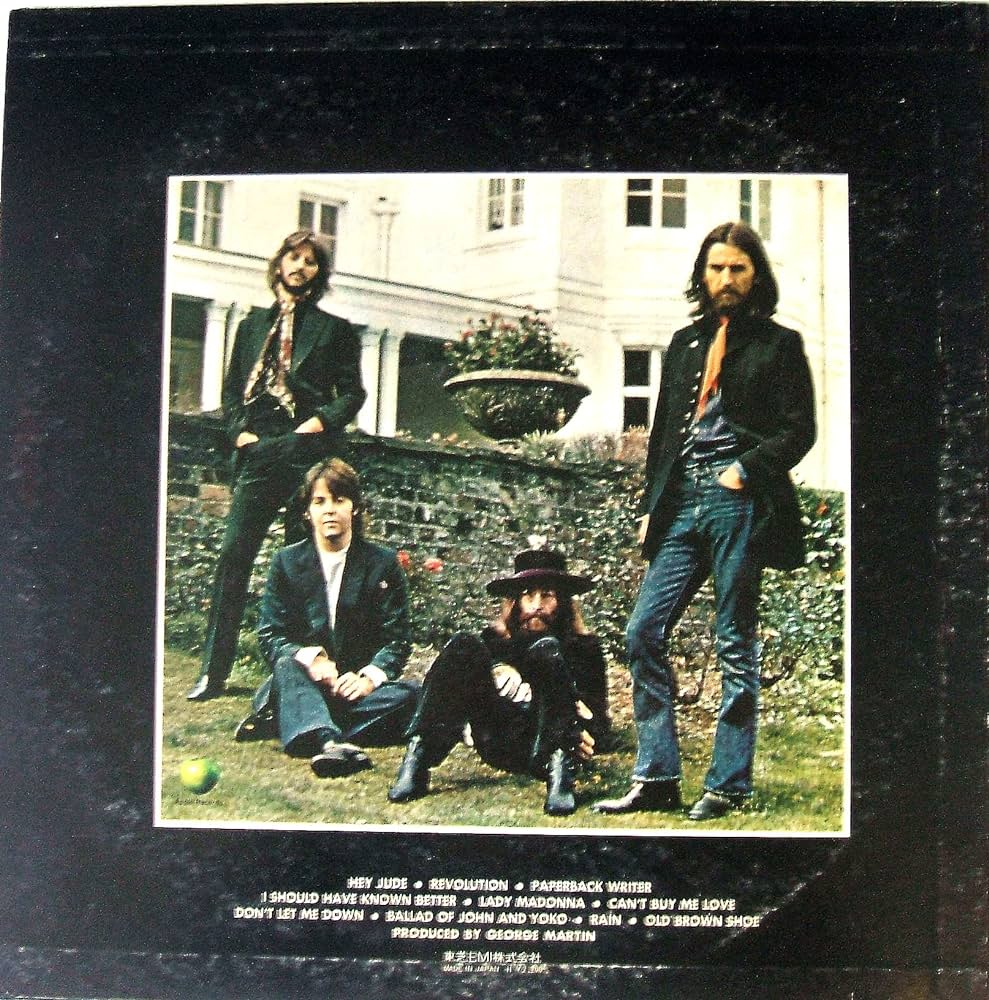
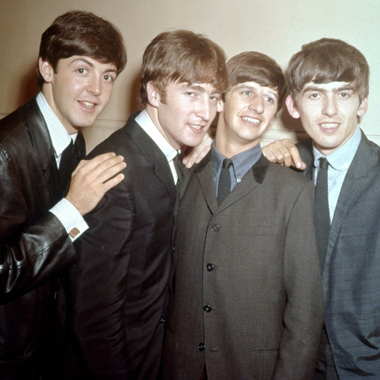
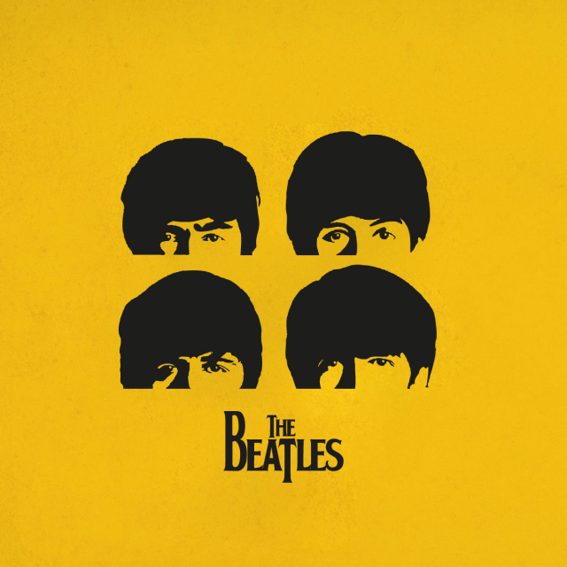
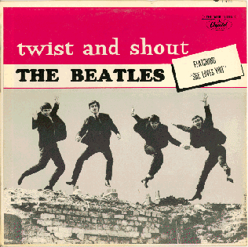

|  |
Hey JudeThe BeatlesAclamada mundialmente, Hey Jude surgiu na cabeça de McCartney durante uma viagem de carro, na qual ele iria visitar Julian e Cynthia Lennon. Na época, John havia se separado da esposa e já estava vivendo com Yoko Ono. |

|
Let It BeThe BeatlesPaul explicou que, durante os anos 60, teve um sonho com a mãe, que já havia falecido. Foi o que inspirou a composição da música, que se tornaria um dos maiores sucessos do grupo. |
|  |
Here Comes The SunThe BeatlesSegundo George, foi "composta numa manhã ensolarada" na mansão de Eric Clapton. Como em "If I Needed Someone", outra composição dele, um solo de guitarra soa durante toda a música. É uma das canções mais famosas e regravadas dos Beatles, já ganhando até versão orquestrada de flautas. |
|  |
Don't Let Me DownThe BeatlesJohn Lennon dedicou essa música para Yoko Ono. Foi a primeira música que ele escreveu para Yoko, com quem se casou em 20 de março de 1969. Lançado como o lado B de “Get Back”, é uma música liricamente simples e totalmente inspirada em sua paixão por Ono. |
|  |
Twist And ShoutThe BeatlesA música evoca a imagem de jovens dançando o twist, um movimento de dança popular naquela época, que simbolizava a quebra de convenções e a busca por diversão. |